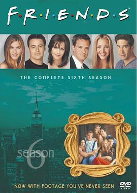

老友记 第六季 / Friends Season 6
又名：六人行 第六季 / 都市六人行 第六季 / F·R·I·E·N·D·S / Six of One
一切是最好的安排，平行时空的两集好看的
作品信息
| 导演 | Kevin Bright |
| 编剧 | 大卫·克拉尼 / 玛尔塔·考夫曼 |
| 主演 | 詹妮弗·安妮斯顿 / 柯特妮·考克斯 / 丽莎·库卓 / 马特·勒布朗 / 马修·派瑞 / 大卫·休默 |
| 类型 | 喜剧 / 爱情 |
| 制片国家/地区 | 美国 |
| 语言 | 英语 |
| 首播 | 1999-09-23(美国) |
| 季数 | 6 |
| 集数 | 25 |
| 单集片长 | 25分钟 |
| IMDb | tt0583438 |
最后一次看到是 2026-08-12T21:11:18+08:00 · 豆瓣原页